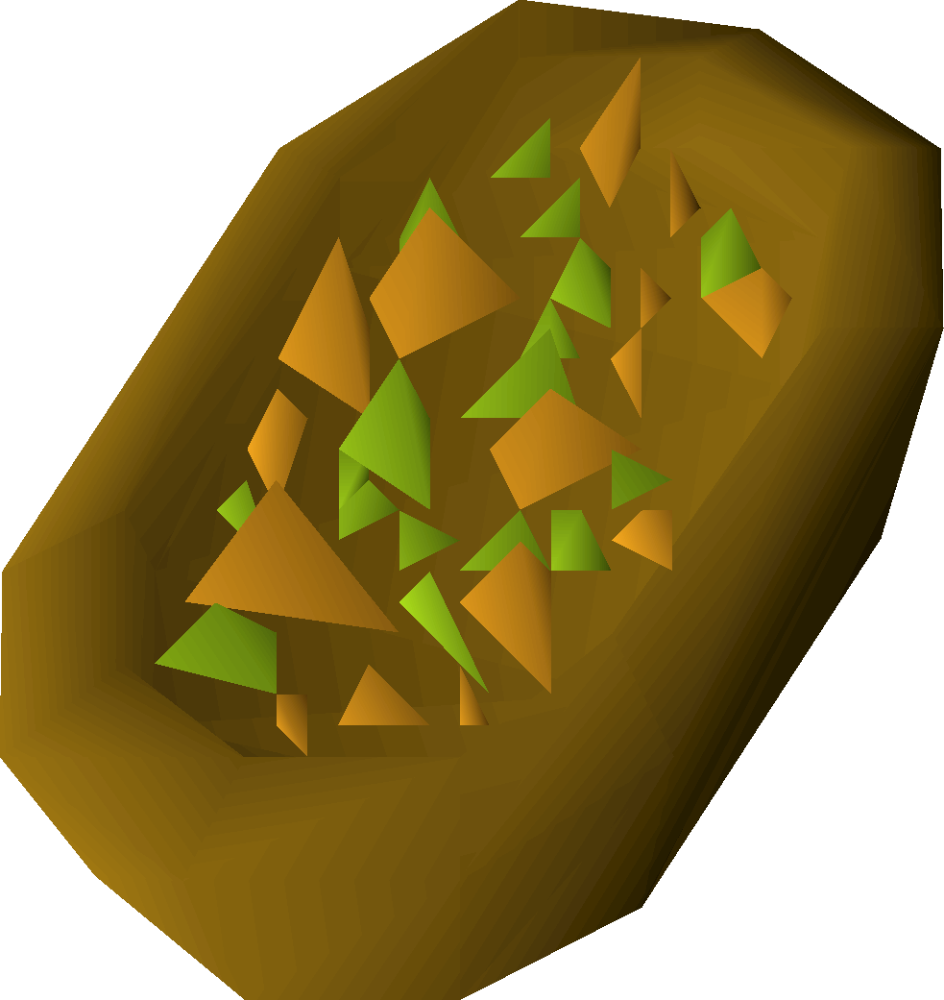

Gnomish fruit batta

A delicious zesty & exotic fruit batta from far away lands
Using the Gnome famous Gianne Dough, this batta has a delectable chewy texture with deep and rich flavour coming from the secret mix of roasted gnomish flours.
- Gianne dough
- Orange chunks
- Lime chunks
- Pineapple chunks
- Equa leaves
- Prepare Gianne dough in a batta tin as normal.
- Bake the dough for a short while.
- Top the batta with chunks of pineapple, orange and lime.
- Lay four sprigs of equa leaves on top of the batta before baking it in the oven once more.
- Finish the batta with a sprinkling of gnome spices.